"Slides" and "transparencies" are the two terms used interchangeably to refer to a semi-transparent positive image on a transparent support. That support may be either glass or plastic film. Glass slides are most often black-and-white, but they may be hand-tinted. While autochromes are a form of "full-color" glass slides, they are relatively rare. The opposite is true for film slides: color film slides are very common, while black-and-white are relatively infrequent. The fact that images on a slide or transparency are conventionally positive sets them apart from images on glass and film negatives.
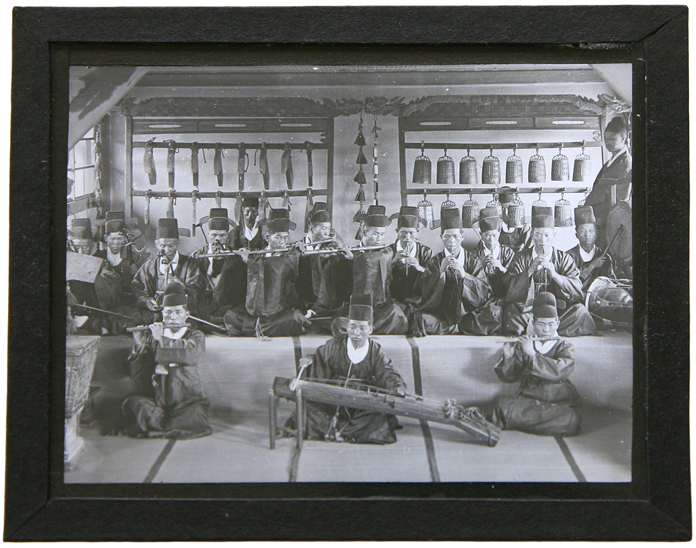
Glass slide. Courtesy of Landscape Architecture, UIUC, University of Illinois Board of Trustees.
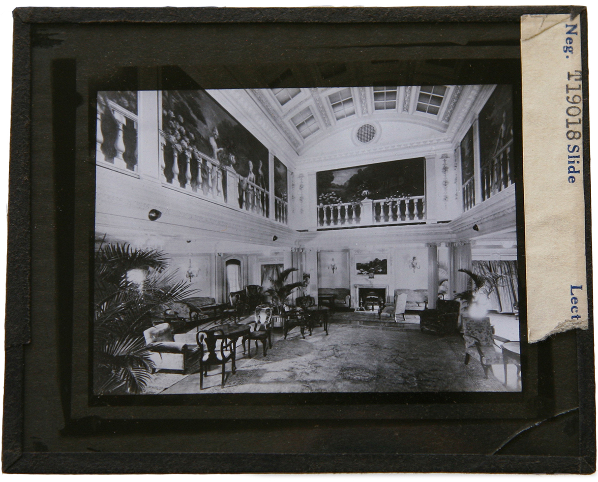
Glass slide. Courtesy of Landscape Architecture, UIUC, University of Illinois Board of Trustees.
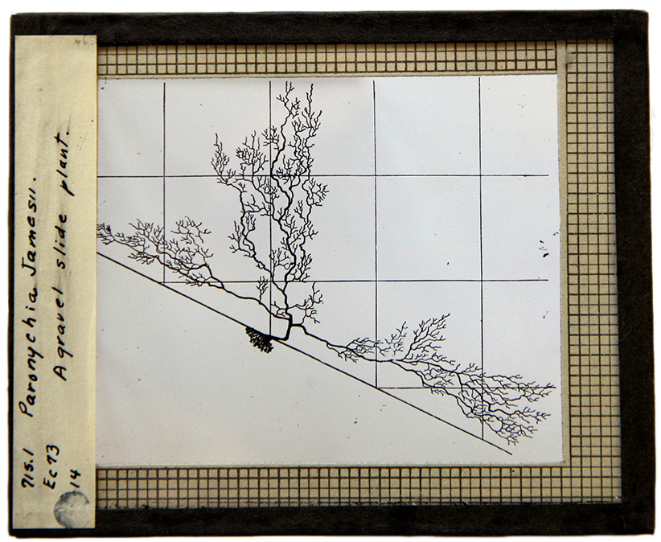
Glass slide. Courtesy of Landscape Architecture, UIUC, University of Illinois Board of Trustees.
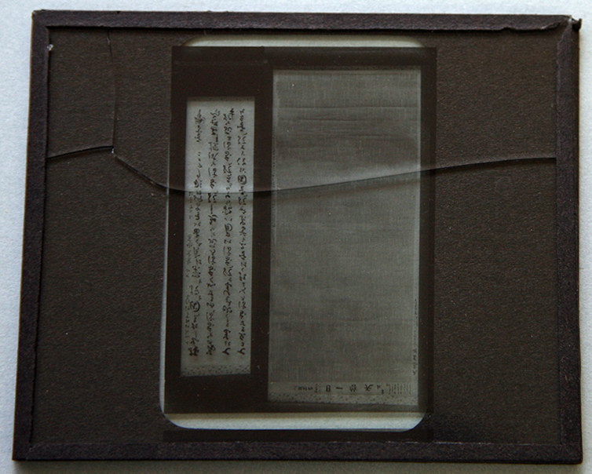
Broken slide held in place by black tape seal. Courtesy of Landscape Architecture, UIUC, University of Illinois Board of Trustees.
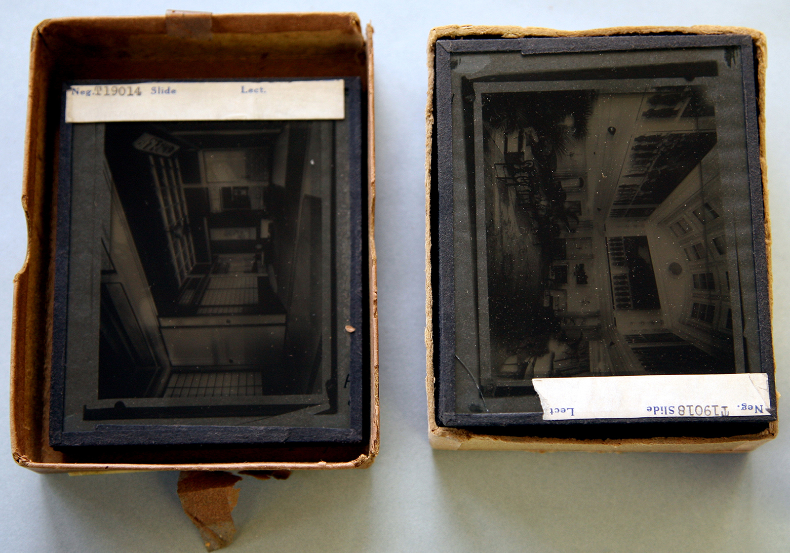
Glass slide box. Although slides will often be discovered in a cardboard container like this, it is inadvisable for long-term storage.
Synonyms
Lantern slide
Stereograph slide
Monochrome glass slide
Dates
1850 – c. 1960
Image Tone
Monochrome (gray-black [gelatin binder], warm brown [collodion binder], ocher orange to olive green [albumen binder]); hand-coloring or tinting possible
Description
A black-and-white glass slide is comprised of a thin glass support with an albumen, collodion, or gelatin binder, and a silver image. A glass slide will likely be a positive image, which sets it apart from a glass plate negative. Lantern slides often have a glass cover in addition to its glass support, and they are sealed along the edges with strips of black tape. Stereograph slides were given a glass cover only if they were made with an albumen binder. Stereograph slides are rectangular and feature two nearly identical images side-by-side; in contrast, lantern slides vary in size but are often nearly square and contain one image. Glass slides may be hand-colored, tinted, or toned.
Many B&W slides were "color-enhanced," making them appear at first glance to be color slides. Hand-coloring was an additive color method: the manual application of water colors, paints, or aniline dyes to the image surface. Hand-colored images can be identified by their saturated, unnaturally bold colors, and sometimes selective coloring.
Composition
Support
Binder
Image
Glass
Gelatin, Collodion, or Albumen
Silver
Deterioration
Since most glass slides are protected by a glass cover, they are often in decent condition, despite having the same elemental instability of either a silver gelatin, collodion, or albumen negative on glass. Without glass cover, the slide is at a higher risk of delamination, flaking, fading, yellowing, and silver mirroring. Acidic environments and enclosures spur these forms of oxidative deterioration along. Gelatin slides are prone to delamination of the image layer. Collodion is more stable than gelatin but is susceptible to image-eliminating abrasion. As with all glass plates, these slides are delicate and can be severely damaged through cracking and breakage.
Risk Level
Moderate. Gelatin emulsions on glass are known to flake and delaminate due to factors both manageable (environmental) and not (manufacture). Collodion is more stable than gelatin but is susceptible to image-eliminating abrasion. Regardless of the binder, care should be taken to maintain stable relative humidity so to prevent weakening of the emulsion.
B&W slides on glass were produced from 1850 to the 1950s, but their use persisted for decades thereafter. They were developed from glass negatives to produce a positive image that could be viewed using a magic lantern or stereoscopic viewer. Lantern slides were used for home entertainment and as illustration in education settings. Stereograph slides were a popular parlor amusement and often featured topographical views. Most glass slides produced before the 1880s were made with albumen. Collodion was also used in the early forms. After 1890, glass slides were commonly made from commercially available gelatin silver plates. Black-and-white glass slides were phased out by color transparencies on film, which became increasingly available after World War II.
Storage Environment
Cool storage (below 50 degrees) is recommended, though cold storage should be avoided for glass based images.Allowable Fluctuation: ±5°F; ±5% RH
Temp.
40–68°F (4–20°C)
RH
30–40% RH
Storage Enclosure(s)
Acid-free enclosures and/or folders are strongly advised. Each slide should have its own enclosure to protect it from dust, handling damage, and changes in environmental conditions. Glass slides in good condition are best stored in a four-flap enclosure made from archival-quality paper; sleeves and envelopes are acceptable. Broken, flaking or delaminating plates should be stored flat in a sink mat (or other enclosure to contain fragments) also made from archival paper. Delaminating emulsions can be protected under a plate of glass. If stored in a paper enclosure, position photo emulsion side away from seams. Such seams (if any) should be on the sides of the enclosure, not down its center. All storage materials should pass the Photographic Activity Test (PAT) as specified in ISO Standard 18916:2007.
Storage Orientation
Store vertically with dividers between each slide. May also be stored horizontally (flat), especially larger or fragmented slides. Enclosures and folders may be stored in hanging files or archival storage boxes. Be mindful of full weight in boxes and on shelves. Wood cabinets should be avoided. Enameled steel, stainless steel, or anodized aluminum are preferred.
Display Recommendations
Responsible display practices ensure the long-term preservation of collections. Light levels in the exhibition area should be kept low. Appropriate filters should be used to minimize exposure to ultraviolet light. Display cases should be enclosed and sealed to protect their contents, and display items should be securely framed or matted using preservation-quality materials that have passed the Photographic Activity Test (ISO18916).
Glass slides should not be exposed to more than 5,000 ft-c hours (50,000 lux hours) per year with a 3-year rest between displays. Hand-colored areas may be particularly light sensitive and should be monitored closely during exhibition.
Autochrome [Additive color screen]
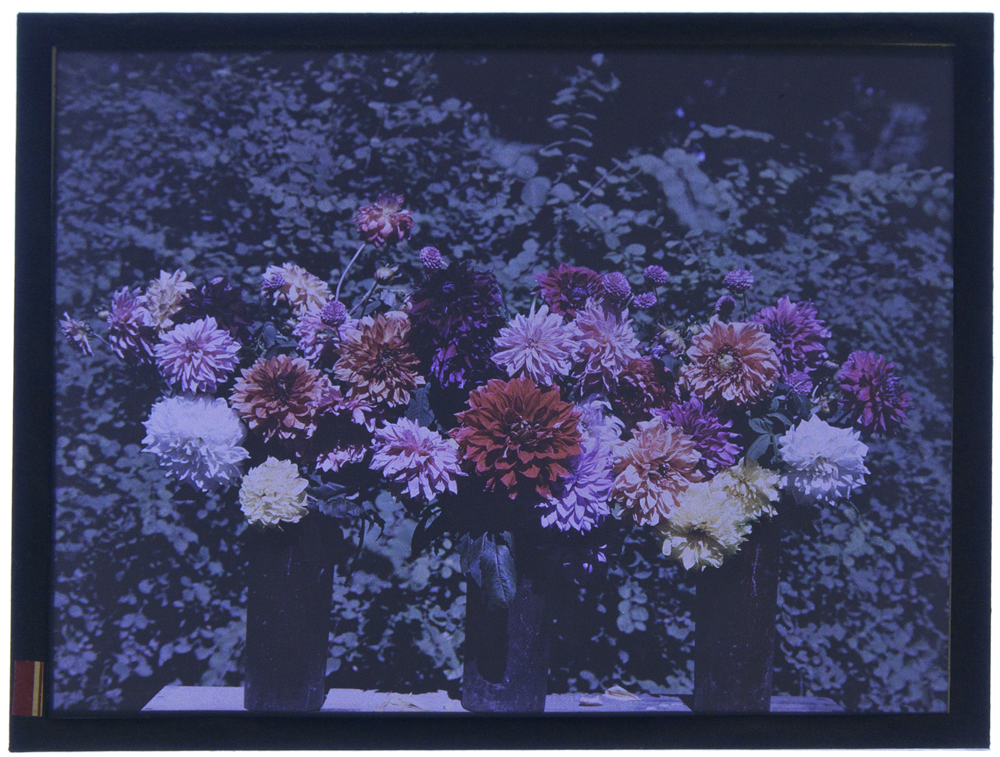
Autochrome additive color screen plate. Courtesy of the Chicago History Museum: Louis Kuppenheimer, Sr., autochrome collection - 1985.0547 PCT0129.
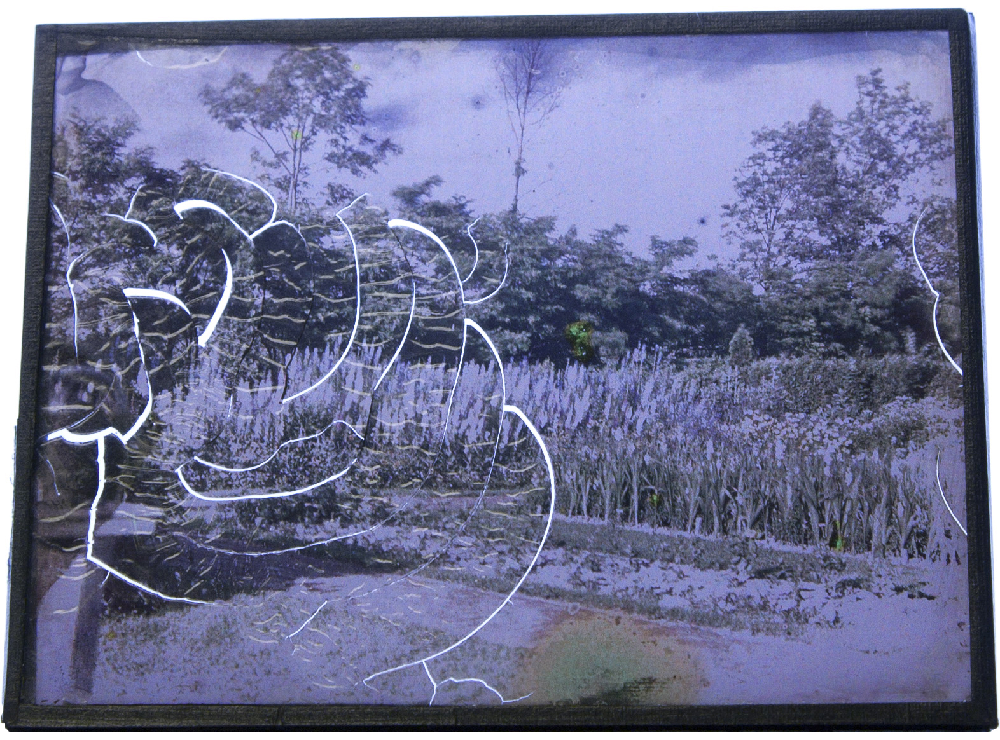
Autochrome showing flaking emulsion. Courtesy of the Chicago History Museum: Louis Kuppenheimer, Sr., autochrome collection - 1985.0547 PCT0129
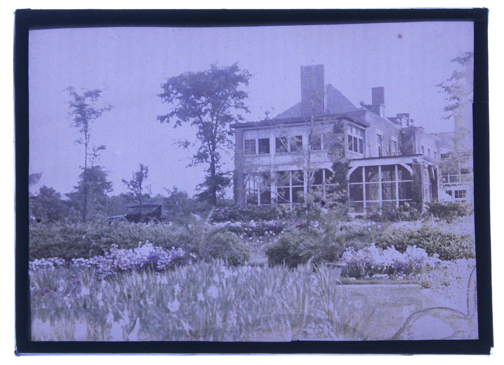
Autochrome. Courtesy of the Chicago History Museum: Louis Kuppenheimer, Sr., autochrome collection - 1985.0547 PCT0129.
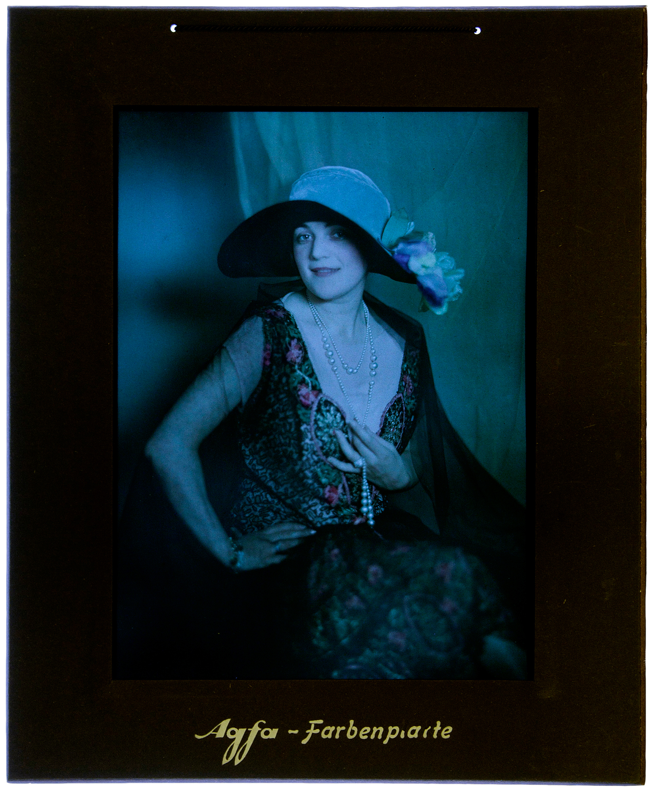
Autochrome. Courtesy of the Chicago History Museum: Autochromes of Mrs. T. Howard Kelly - 1983.0135 PCT0137
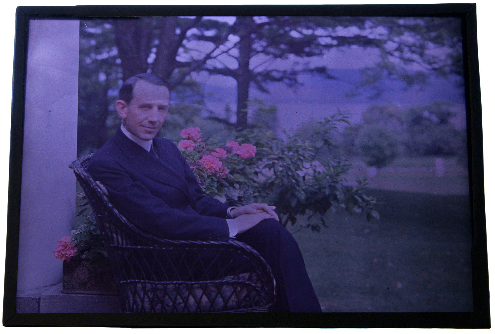
Autochrome. Courtesy of the Chicago History Museum: Portrait of John T. McCutcheon - 1956.0507 PCT0139.
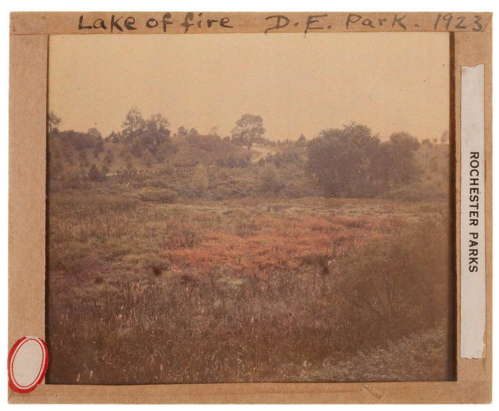
Autochrome slide. Image courtesy of Image Permanence Institute, Graphics Atlas.
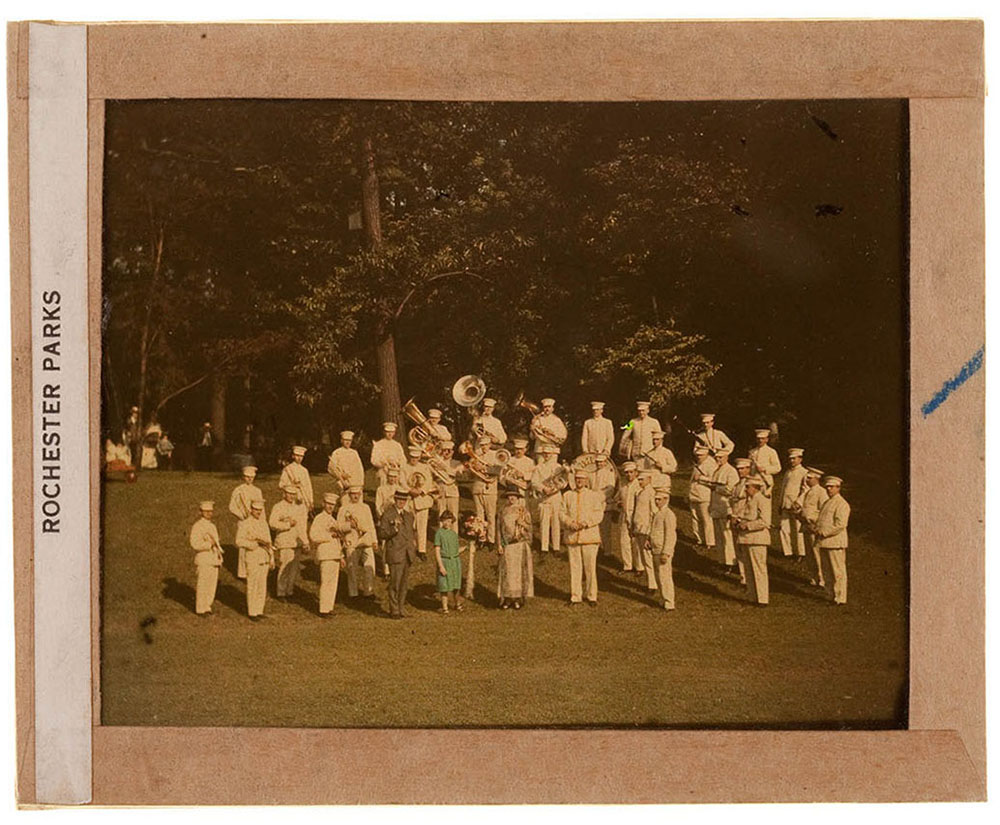
Autochrome slide. Image courtesy of Image Permanence Institute, Graphics Atlas.
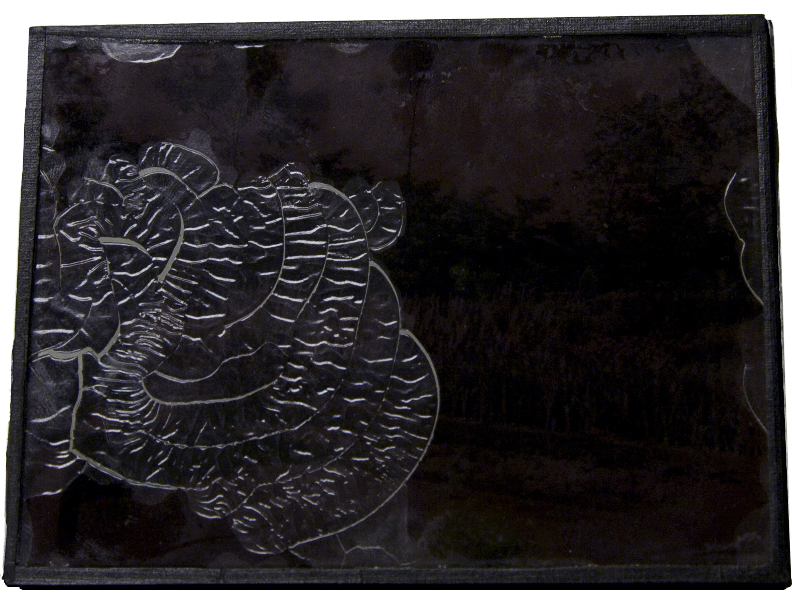
Autochrome emulsion delamination. Image courtesy of the Chicago History Museum: Louis Kuppenheimer, Sr., Autochrome Collection.
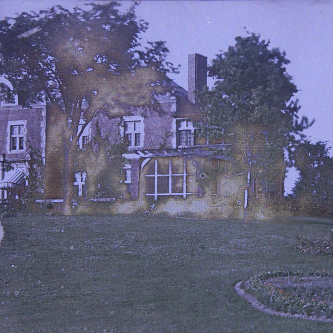
Autochrome dye distortion. Courtesy of the Chicago History Museum: Louis Kuppenheimer, Sr., Autochrome Collection.
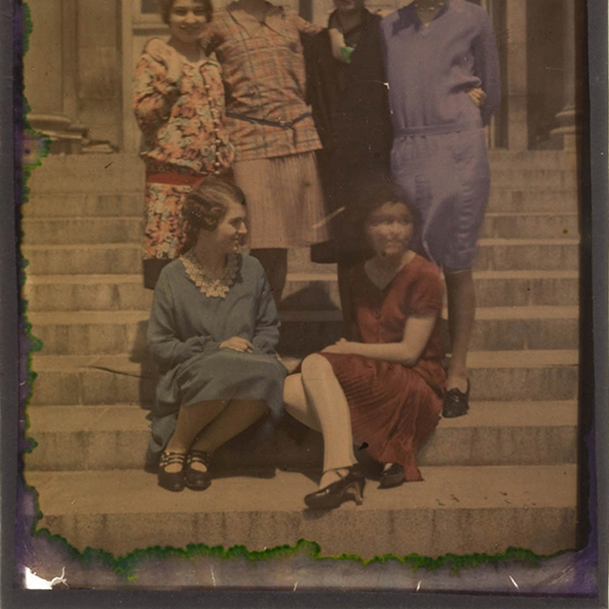
Autochrome dye distortion. Image courtesy of Image Permanence Institute, Graphics Atlas
Synonyms
Additive color screen plate
Color glass slide/transparency
Dates
1907 – mid 1950s
Image Tone
Non-uniform mosaic screen of colored grains
Description
An autochrome is a color transparency supported on a glass plate with an image composed of an irregular "screen" of dyed starch grains (red-orange, blue-violet, and green) and a silver gelatin emulsion: a 3-color mosaic screen additive process. A layer of varnish is applied between the glass, dyed starch granules, gelatin-silver image layer, and as a final protective layer. Hand-tinted monochrome slides may be mistaken for color process slides, such as the autochrome. The grain filters were microscopically small, roughly four million to the square inch. Random distribution meant that there would often be clusters of grains of the same color, visible to the naked eye.
Composition
Support
Binder
Image
Glass
Gelatin
Silver and dyed starch granules
Deterioration
Autochromes are susceptible to deterioration similar to silver gelatin glass plate negatives, including oxidation and breakage of the glass support. Autochrome color, however, is extremely vulnerable to light fading; exposure may cause cracking in the screen emulsion layer. Emulsion elamination and flaking on the outer edges is also common, especially if the plate did not receive a final varnish layer. Additionally, high humidity or water exposure will cause dye displacement, dissolution of the color starch layer, and mold. A well-preserved autochrome kept in dark storage can still appear strikingly vivid.
Risk Level
Moderately high. Autochromes are extremely sensitive to light, pollutants, and humidity. The delicate image layers should be sealed under glass to protect from exposure to air and pollutants. Autochromes should not be exposed to high humidity. Do not project or display. If kept in dark storage, autochrome color will persist. Handle autochromes rarely and with great care
Common Size(s)
Varied, from a 2" × 2" square to 15" × 18"
Background
Autochromes were most popular from 1907 to 1933 (during the years that the Lumière brothers manufactured them) but were available until the mid-1950s. The autochrome is the first practical and commercially viable color process. Plates could be exposed in conventional cameras and converted to positive color transparencies by a 10 to 12 minute reversal processing procedure. Emulsions carried the three-color potato starch grains until 1938, when dyed beer yeast was substituted. The autochrome plate was eventually phased out by Kodachrome and other flexible films, which were less expensive, easier, faster, and compatible with the smaller-format cameras that were becoming standard. There are also several other types of color positives on glass within the same period but of lesser occurrence.
Storage Environment
Cool storage (below 50 degrees) is recommended, though cold storage should be avoided for glass based images. Allowable Fluctuation: ±2°F; ±5% RH
Ideal
Temp.
40–50°F (4.5–10°C)
RH
25–40% RH
Storage Enclosure(s)
Use of a glass cover is beneficial as both a shield against physical damage and a buffer from moisture/humidity and airborne pollutants. Acid-free enclosures and/or folders are strongly advised. Each slide should have its own enclosure to protect it from dust, handling damage, and changes in environmental conditions. Glass slides in good condition are best stored in a four-flap enclosure made from archival-quality paper; sleeves and envelopes are acceptable alternatives. Broken, flaking or delaminating plates should be stored flat in a sink mat (or other enclosure to contain fragments), also made from archival paper. Position emulsion side away from seams in paper enclosures. Such seams (if any) should be on the sides of the enclosure, not down its center. All storage materials should pass the Photographic Activity Test (PAT) as specified in ISO Standard 18916:2007.
Storage Orientation
Store vertically with dividers between each slide. May also be stored horizontally (flat), especially the larger or fragmented slides. Enclosures and folders may be stored in hanging files or archival storage boxes. Be mindful of full weight in boxes and on shelves. Wood cabinets should be avoided. Enameled steel, stainless steel, or anodized aluminum are preferred.
Display Recommendations
Autochromes should never be displayed. Use of facsimiles for display is strongly advised.
Responsible display practices ensure the long-term preservation of collections. Light levels in the exhibition area should be kept low. Appropriate filters should be used to minimize exposure to ultraviolet light. Display cases should be enclosed and sealed to protect their contents, and display items should be securely framed or matted using preservation-quality materials that have passed the Photographic Activity Test (ISO18916).
Other Additive Color Screen Formats
Lumière’s autochrome is the most common of the additive color screen processes, but there were many others that came and went with limited success throughout the twentieth century. On glass: Lippmann plate (1891–1914), Finlay Thames (1908–1910), Dufay Dioptichrome (1909–1910), Omnicolore (1909–1911), Paget Color (1913–1922). Finlay Color (glass; 1929–1941). Agfacolor were released on both glass (1916–1938) and film (1932–1941). On film: Filmcolor (nitrate sheet; 1931–1954), Lumicolor (nitrate roll; 1933–1952), Dufaycolor (acetate; 1935–1958), Alticolor (sheet/roll; 1952–1956), and finally the 35mm instant film slide Polachrome (polyester; 1983–2002).
B&W Film Slide
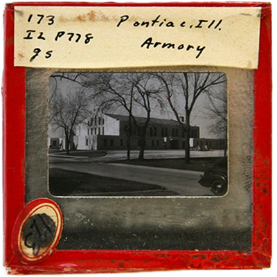
Black-and-white film slide. Courtesy of Landscape Architecture, UIUC, University of Illinois Board of Trustees.
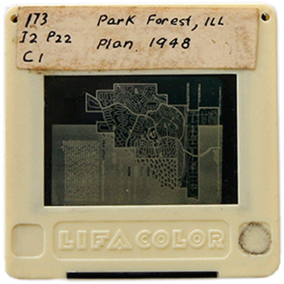
Black-and-white film slide front. Courtesy of Landscape Architecture, UIUC, University of Illinois Board of Trustees.
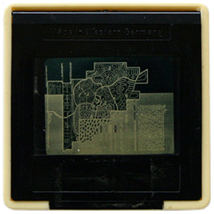
Black-and-white film slide back. Courtesy of Landscape Architecture, UIUC, University of Illinois Board of Trustees.
Synonyms
Gelatin transparency/slide
Monochrome transparency/slide
Dates
c. 1930 – c. 1970
Image Tone
Monochrome (gray-black)
Description
A black-and-white slide or transparency on film is created through a gelatin silver bromide process on a plastic (nitrate, acetate, or polyester) film base. This positive transparency has the same structural qualities as a silver gelatin negative on film. Monochrome slides and transparencies are relatively rare. Individual slides are placed in plastic, metal, or cardboard mounts in order to protect them and allow them to be used in a slide projector.
Composition
Support
Binder
Image
Film (Nitrate, Acetate, or Polyester)
Gelatin
Silver
Deterioration
Silver mirroring is a common form of deterioration rising from oxidation of the silver image material in monochrome transparencies. Deterioration of the film support corresponds to that of gelatin silver film negatives, depending on the plastic.
Nitrate: Cellulose nitrate film deterioration is exacerbated by low and high relative humidity in the environment. In a humid environment, the emulsion may soften and become sticky. In an extremely dry environment the film becomes brittle. In the final stage of deterioration, nitrate film forms a solid mass than cannot be separated or handled safely. Nitrate film deterioration can be identified by the acrid, sharp odor as nitric and nitrous acids are released. These acidic vapors are damaging to surrounding objects, so deteriorating film must be evaluated to determine whether it should be discarded.
Acetate: Cellulose acetate film is susceptible to vinegar syndrome, which causes the film base to shrink and the gelatin emulsion to pull up in folds. A strong vinegar odor is a telltale symptom in later stages of deterioration. Acetate deterioration is accelerated by humid conditions.
Polyester: Polyester film is inert, considered archival and has a life-expectancy of 500+ years under proper storage conditions.
Risk Level
Moderately low. Monochrome transparencies should be protected from light exposure and stored in a cold, dark, and dry environment. In the (rare) case of nitrate-based slides, the preservation risk level is higher. Black-and-white slides on acetate film are at moderate risk and should be monitored closely for signs of deterioration. Polyester-based B&W slides face a low preservation risk.
Common Size(s)
Slides on 2" × 2" mount (cardboard or plastic): 35mm/135-format image measures 24mm × 36mm, 126-format image measures 28mm × 28mm, 110-format image measures 13mm × 17mm
Roll film: 35mm (2¼") wide, in roll or strip form
Sheet film: Various sizes, typically 4" × 5", 8" × 10"
Disc film: Contains 15 8mm × 11mm frames
Background
Black-and-white photographic film slides were produced from c.1930 to c.1970. They are relatively rare in collections, as they were bypassed in public favor quickly by color photo slides, which were wildly successful upon their commercial introduction in the late 1930s. Regardless of their relative obscurity in collection, B&W film slide turns out to be far more stable.
Storage Environment
Cool storage (below 50 degrees) is recommended, and colder is better for unstable plastic bases. Allowable Fluctuation: ±5°F; ±5% RH
Support
Temp./RH (Ideal range)
Nitrate
0–32°F (0°C); 20–30% RH
Acetate
35°F (2°C) for 20–50% RH
41°F (5°C) for 20–40% RH
45°F (7°C) for 20–30% RH
Polyester
< 68°F (20°C); 20–50% RH
Storage Enclosure(s)
Acid-free enclosures and/or folders are strongly advised. Due to the inherent acidity of cellulose nitrate and acetate, storage in a buffered alkaline enclosure is recommended. Each slide should have its own enclosure to protect it from dust, handling damage, and changes in environmental conditions. This enclosure may be a paper (conservation-quality, acid-free) or plastic (uncoated polyester, polyethylene, polypropylene, cellulose triacetate) sleeve, envelope, or wrapper. Position photo image material away from seams in paper enclosures. Such seams (if any) should be on the sides of the enclosure and not down its center. All storage materials should pass the Photographic Activity Test (PAT) as specified in ISO Standard 18916:2007.
Storage Orientation
Store vertically with dividers between each slide. May also be stored horizontally (flat). Roll film may remain rolled or may be segmented for more uniform, flat storage. Enclosures and folders may be stored in hanging files or archival storage boxes. Wood cabinets should be avoided. Enameled steel, stainless steel, or anodized aluminum are preferred.
Display Recommendations
For information about exhibition environment information, see Exhibition Guidelines.
Color Film Slide
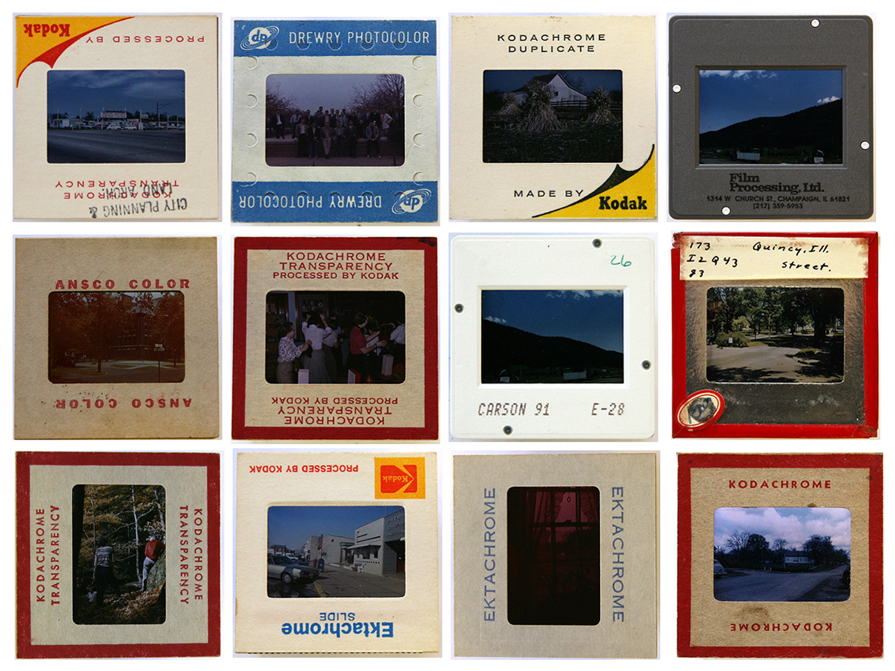
Assortment of color slides and mounts. Courtesy of Landscape Architecture, UIUC, University of Illinois Board of Trustees.
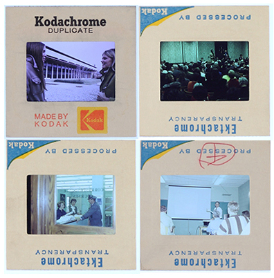
Assortment of color slides and mounts.
Synonyms
Color transparency
Chromogenic process transparency
Integral tripack
Kodachrome
Ektachrome
Ansco Color film
Fujichrome
Agfacolor Neu transparency
Dates
1935 – present
Image Tone
Full-color (yellow, magenta, and cyan dyes)
Description
A color slide or transparency is a saturated full-color positive image on a plastic film support composed of three layers of gelatin, each containing a dye image (yellow, magenta, cyan). Kodachrome is the most well-known chromogenic process. Color transparencies are often placed in cardboard or plastic mounts to protect them during handling and allow them to be used in slide projectors. The brand name (e.g. Kodak Kodachrome, Kodak Ektachrome, Agfa Agfacolor, Fujichrome) of the film is often printed on the border.
Composition
Support
Binder
Image
Film (Acetate or Polyester)
Gelatin
Yellow, magenta, and cyan dyes
Deterioration
Dye fading or shifting will occur as a result of even slight light exposure. Fujichrome slide image dyes are more stable under light exposure than those of Kodachrome, which fade quickly when in the light but last considerably longer than Fujichrome in dark storage. Besides noticeable discoloration, the level of dye fading may also be assessed by observing the border under magnification. As this "black" border is in fact a composite of the color dyes, its edges will lighten/soften and shift towards magenta over time. Deterioration of the film support varies depending on the type of plastic: acetate or polyester.
Acetate: Cellulose acetate film is susceptible to vinegar syndrome, which causes the film base to shrink and the gelatin emulsion to pull up in folds. A strong vinegar odor is a telltale symptom in later stages of deterioration. Acetate deterioration is accelerated by humid conditions.
Polyester: Polyester film is inert, considered archival, and has a life-expectancy of 500+ years under proper storage conditions.
Risk Level
Moderate to moderately high. Color transparencies should be protected from light exposure and stored in a cold, dark, dry environment. Color transparencies will fade rapidly when exposed to light, but they will gradually fade even if kept in dark storage. The degree of fading will depend on brand, era, and the colorants used. Slides on acetate film are at a higher risk level than those on polyester and should be monitored closely for signs of deterioration.
Sheet film: Various sizes, typically 4" × 5", 8" × 10"
Disc film: Contains 15 8mm × 11mm frames
Background
Color transparencies on film were produced beginning in 1935 and continue to be produced to the present day, although use has declined steadily since the 1960s. Kodachrome was first marketed as a 16mm amateur movie film in 1935 before it was released as 35mm color film slide the following year. Agfacolor Neu followed in 1936, then Kodak Ektachrome in 1946. Transparency films were intended for projection as slides or as sheet film.
Storage Environment
Cool storage (below 50 degrees) is recommended, and colder is better for unstable plastic bases. Allowable Fluctuation: ±5°F; ±5% RH
Support
Temp./RH (Ideal range)
Acetate
14°F (–10°C) for 20–50% RH
27°F (-3°C) for 20–40% RH
Polyester
14°F (-10°C) for 20–50% RH
27°F (-3°C) for 20–40% RH
36°F (2°C) for 20–30% RH
Storage Enclosure(s)
Acid-free enclosures and/or folders are strongly advised. Due to the inherent acidity of acetate, storage in a buffered alkaline enclosure is recommended. Each slide should have its own enclosure to protect it from dust, handling damage, and changes in environmental conditions. This enclosure may be a paper (conservation-quality, acid-free) or plastic (polypropylene, uncoated polyester, cellulose triacetate) sleeve, envelope, or wrapper. Position photo image material away from seams in paper enclosures. Such seams (if any) should be on the sides of the enclosure, not down its center. All storage materials should pass the Photographic Activity Test (PAT) as specified in ISO Standard 18916:2007.
Storage Orientation
Store vertically with dividers between each slide. May also be stored horizontally (flat). Roll film may remain rolled or may be segmented for more uniform, flat storage. Enclosures and folders may be stored in hanging files or archival storage boxes. Wood cabinets should be avoided. Enameled steel, stainless steel, or anodized aluminum are preferred.
Display Recommendations
Kodachrome transparencies should not be projected due to their poor light stability and aversion to intense heat.
For information about exhibition environment information, see Exhibition Guidelines.
Resources
Coe, B. (1978). Colour photography: The first hundred years 1840-1940. London, England: Ash & Grant.
ISO. (2007). 18916 Imaging materials: Processed imaging materials–Photographic activity test for enclosure materials. Geneva, Switzerland: International Organization for Standardization.
Krause, P. (1985). Preservation of Autochrome plates in the collection of the national geographic society. In Norris, D.H. & Gutierrez, J.J. (Ed.), Issues in the conservation of photographs (496-511). Los Angeles, CA: Getty Conservation Institute.
Pénichon, S. (2013). Twentieth-century color photographs: history, identification, and care. Los Angeles, CA: Getty Publications.
Wilhelm, H. & Brower, C. (1993). The permanence and care of color photographs: Traditional and digital color prints, color negatives, slides, and motion pictures. Grinnell, IA: Preservation Publishing Company. Retrieved from: http://wilhelm-research.com/pdf/HW_Book_761_Pages_HiRes_v1c.pdf